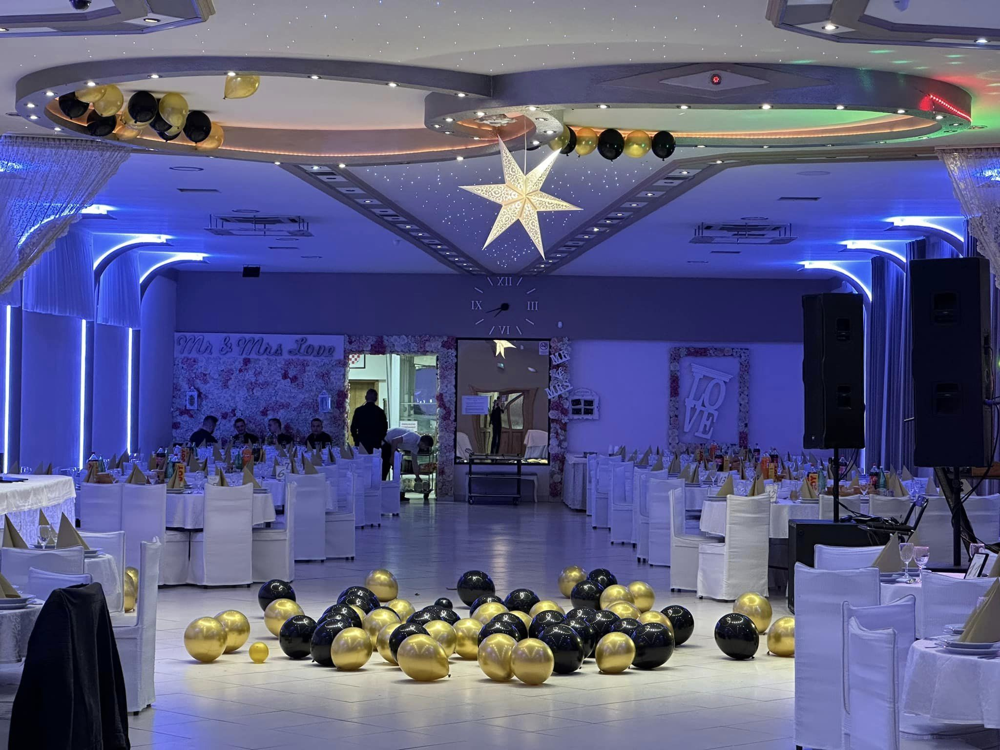
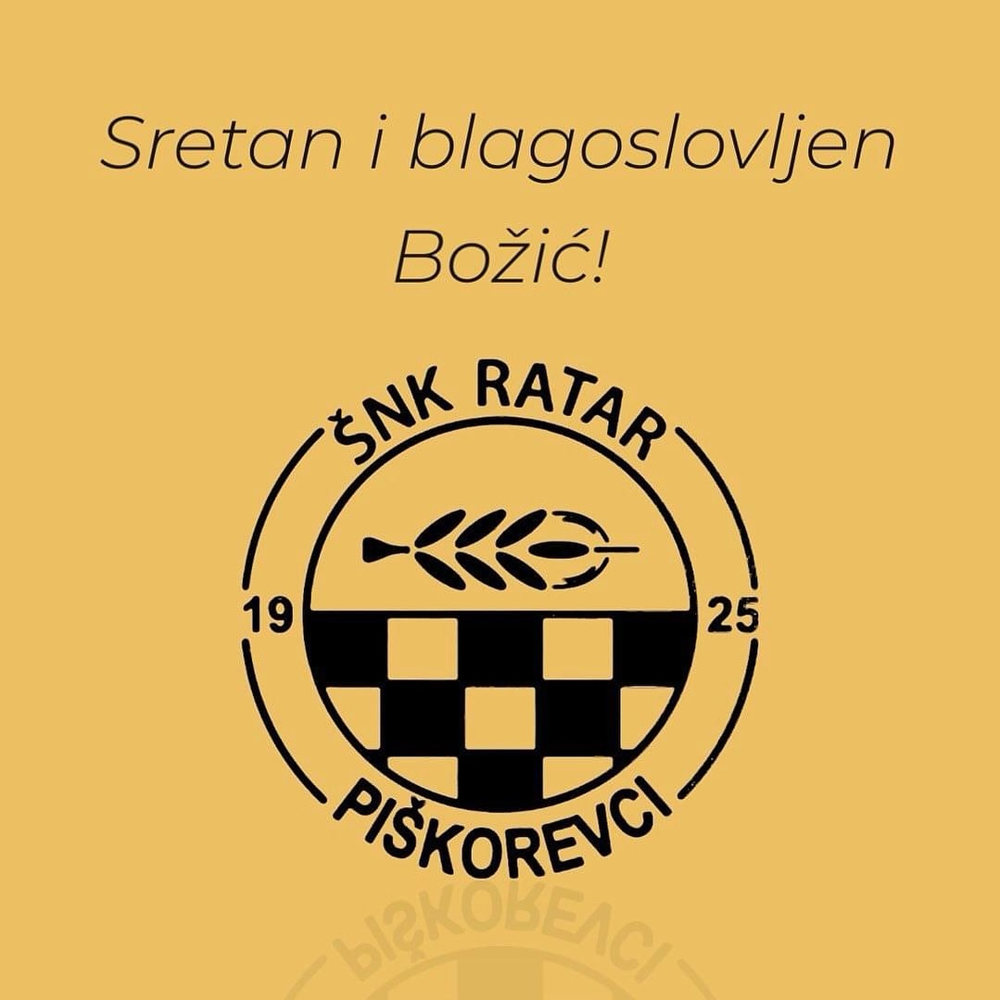
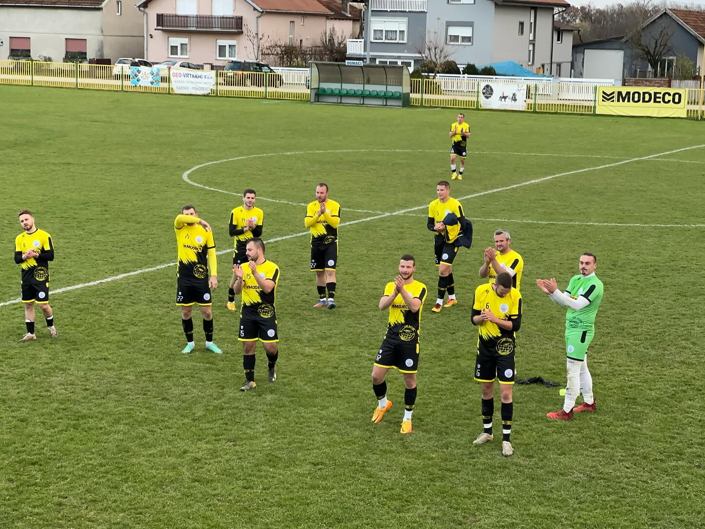
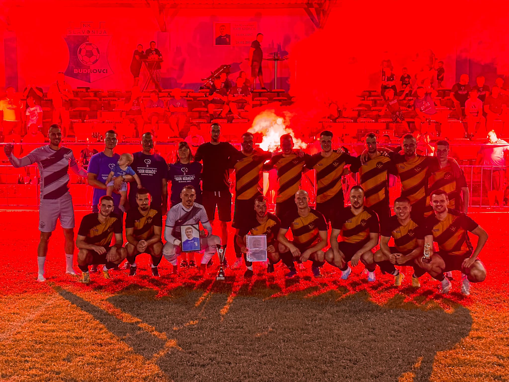

Dragi prijatelji ŠNK Ratar,
Želimo se zahvaliti svima koji su sinoć svojim prisustvom uveličali našu Žutu noć! Vaša energija i pozitiva učinile su ovu noć još posebnijom. 🍾💫
Posebna zahvala ide našim vrijednim donatorima i sponzorima, bez kojih ova fešta ne bi bila toliko atraktivna. Hvala vam na podršci koja čini naš klub još jačim i uspješnijim. 💛🖤
Također, veliko hvala članovima kluba na izvrsnoj organizaciji. Sve je bilo na vrhunskom nivou, od atmosfere do sitnih detalja. Ponosni smo što smo dio ovako sjajne zajednice. 🟨⬛️
A poseban štih sinoć, osim uzbudljivih tombola, donijelo je i natjecanje žena u pucanju penala. Žene i djevojke, pokazale ste nam svoje sportsko umijeće i to je bio prizor za pamćenje! 💃⚽️🥅
Hvala vam još jednom, dragi prijatelji ŠNK Ratar. Nastavljamo zajedno graditi lijepe trenutke i uspomene. Vidimo se uskoro! ⚽️
S ljubavlju,
Vaš ŠNK Ratar 🟨⬛️

Sretan i blagoslovljen Božić želi vam ŠNK Ratar Piškorevci! ❄️🎄💛

Ratar - Omladinac 2:2 (1:1)
Mišić ⚽️
Šekerija N. ⚽️

HNK Đakovo Croatia (juniori) - Ratar 0:4
Bala Antonio ⚽️
Kovačević Robert ⚽️
Mišić Josip ⚽️
Vukadin Josip ⚽️
U današnjoj finalnoj utakmici 5. memorijalnog turnira Igor Kedačić u Budrovcima igrali smo protiv juniora HNK Đakovo Croatia i pobijedili rezultatom 0:4 te tako osvojili turnir drugu godinu za redom. Utakmica je odigrana u odličnoj atmosferi pred ispunjenim tribinama. Strijelci za nas bili su Bala, Kovačević, Mišić i Vukadin. ⚽️
Ovo je naš drugi osvojeni turnir u Budrovcima, a u prva 3 izdanja smo svaki puta osvajali 3. mjesto.
Osim nagrade za prvo mjesto, nagradu za najboljeg strijelca turnira osvojio je naš Pavlo Sikora.
Zahvaljujemo se našim sportskim prijateljima iz Budrovaca i Igorovoj obitelji na odličnoj organizaciji turnira, a našoj momčadi čestitamo na osvajanju prvog mjesta.
